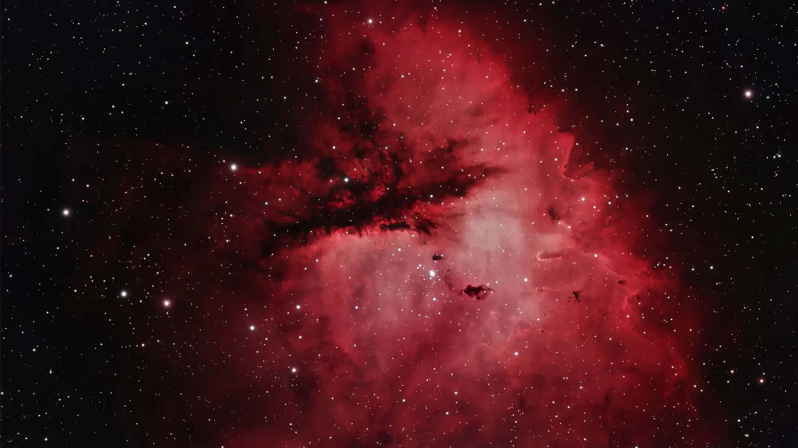
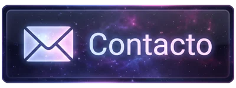

Paisajes de ciencia ficción
Soy Nébula, artista digital. Exploro nebulosas, planetas y mundos que todavía no existen.
Galería de trabajos
Presentación
Ambiente sonoro
Audio de SonidosKMD en YouTube.
¿Hablamos?
Encarga tu paisaje o pregunta por mis trabajos.
